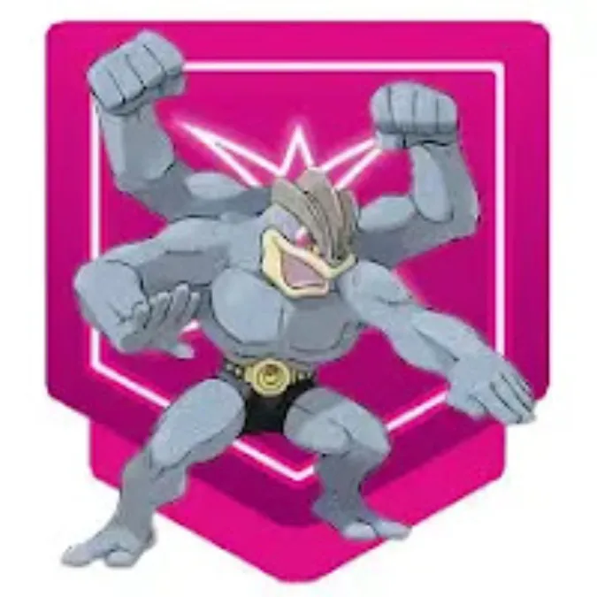
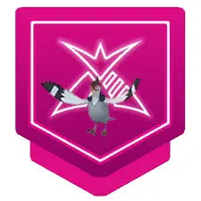

<!--<!doctype html>
<html lang="en">
<head>
  <meta charset="utf-8" />
  <meta name="viewport" content="width=device-width, initial-scale=1" />
  <title>Gigantamax Venusaur Raid Guide — Best Counters, Teams & Strategy | Pokémon Gaming</title>
  <meta name="description" content="Gigantamax Venusaur raid guide for Pokémon GO — weaknesses, top counters, recommended teams, weather tips, raid size, move analysis and FAQ. A complete, playable guide for trainers of all levels." />
  <link rel="canonical" href="https://pokemongaming.in/gigantamax-venusaur-raid-guide.html" />
  <style>
    /* Minimal in-article styles — adapt to your site CSS */
    body { font-family: Inter, system-ui, -apple-system, "Segoe UI", Roboto, "Helvetica Neue", Arial; color:#222; line-height:1.6; padding:16px; }
    .lead { font-size:1.05rem; margin-bottom:1em; color:#2b2b2b; }
    h1 { font-size:1.8rem; margin-bottom:0.25rem; }
    h2 { margin-top:1.25rem; margin-bottom:0.5rem; font-size:1.25rem; }
    h3 { margin-top:0.85rem; margin-bottom:0.4rem; font-size:1.05rem; }
    table { border-collapse:collapse; width:100%; margin:12px 0; }
    th, td { border:1px solid #e8e8e8; padding:10px 12px; text-align:left; vertical-align:top; }
    th { background:#fafafa; font-weight:700; }
    .note { background:#fff8e6; padding:10px; border-left:4px solid #ffb74d; margin:12px 0; }
    .pro-tip { background:#e8f8f1; padding:10px; border-left:4px solid #48c78e; margin:12px 0; }
    .author-box { border-top:1px solid #eee; padding-top:14px; margin-top:20px; display:flex; gap:12px; align-items:center; }
    .author-box img { width:56px; height:56px; border-radius:50%; object-fit:cover; }
    .small { font-size:0.92rem; color:#666; }
    ol, ul { margin-left:1.1rem; margin-bottom:1rem; }
    .cta { display:inline-block; padding:8px 12px; background:#2f855a; color:white; border-radius:6px; text-decoration:none; }
    .faq q { font-style:italic; }
    pre.code { background:#f4f4f4; padding:12px; overflow:auto; }
  </style>
</head>
<body>
<article>
  <header>
    <h1>Gigantamax Venusaur Raid Guide — Best Counters, Teams & Strategy</h1>
    <p class="lead">Gigantamax Venusaur is a bulky Grass/Poison raid boss that can punish poor counter selection with strong charged moves and high survivability. This guide gives you practical counters, sample teams, move analysis, weather and player-count guidance, plus clear strategies so you can win faster and more reliably — written in a gaming-blog style for quick reading and immediate use.</p>
    <p class="small">Last updated: <strong>October 27, 2025</strong></p>
  </header>

  <section>
    <h2>Gigantamax Venusaur — Quick Overview</h2>
    <p>Gigantamax Venusaur keeps Grass as its core identity but with boosted bulk and longevity. Its Poison typing adds coverage and changes some resistances — notably it resists Fighting and Fairy, and is vulnerable to Fire, Psychic, Ice and Flying. In raid form it often uses charged Grass moves (e.g., Frenzy Plant variants) and may include Sludge Bomb or Earthquake depending on the release pattern. Expect a fight that rewards fast, high-DPS Fire and Flying attackers, and a few reliable Psychic options against Poison coverage.</p>
    <p class="pro-tip"><strong>Pro tip:</strong> Gigantamax bosses have higher HP pools — prioritize sustained DPS and durability rather than glass-cannon swings that faint too quickly.</p>
  </section>

  <section>
    <h2>Weakness & Type Chart</h2>
    <table aria-label="Weakness chart">
      <thead>
        <tr><th>Type</th><th>Effect vs Gigantamax Venusaur</th></tr>
      </thead>
      <tbody>
        <tr><td>Fire</td><td>Super effective (×1.6) — top consistent counter type.</td></tr>
        <tr><td>Flying</td><td>Super effective (×1.6) — great coverage vs Grass.</td></tr>
        <tr><td>Ice</td><td>Super effective (×1.6) — high DPS but less common choices.</td></tr>
        <tr><td>Psychic</td><td>Super effective (×1.6) — especially valuable against Poison moves.</td></tr>
        <tr><td>Ground</td><td>Neutral — situationally useful against Sludge Bomb if present.</td></tr>
        <tr><td>Water / Grass</td><td>Resisted — avoid these as main counters.</td></tr>
      </tbody>
    </table>
    <p class="note">Note: Exact effectiveness can vary with the boss's charged move — always check the move preview before joining and adapt your party accordingly.</p>
  </section>

  <section>
    <h2>Top Counters — Ranked List</h2>
    <p>This table lists the most reliable counters for Gigantamax Venusaur, prioritizing weather-boost potential, accessibility and raw DPS for Gigantamax HP pools.</p>

    <table aria-label="Best counters list">
      <thead>
        <tr><th>Rank</th><th>Pokémon</th><th>Moveset</th><th>Why</th></tr>
      </thead>
      <tbody>
        <tr><td>1</td><td>Reshiram</td><td>Fire Fang / Overheat</td><td>Top Fire DPS — excellent vs Grass and bulky raid HP.</td></tr>
        <tr><td>2</td><td>Charm (Mega) — Mega Charizard Y</td><td>Fire Spin / Blast Burn</td><td>Mega Charizard Y or other Fire-boosting Megas massively shorten fights.</td></tr>
        <tr><td>3</td><td>Talondramon (Talonflame variant) / Talonflame</td><td>Incinerate / Brave Bird</td><td>Fast Flying DPS and excellent energy gain; very efficient vs Grass.</td></tr>
        <tr><td>4</td><td>Ho-Oh</td><td>Incinerate / Sacred Fire</td><td>High Fire damage and bulk — ideal for sustained DPS.</td></tr>
        <tr><td>5</td><td>Charizard (Blast Burn)</td><td>Fire Spin / Blast Burn</td><td>Accessible Fire attacker with community-day moves; strong value for stardust.</td></tr>
        <tr><td>6</td><td>Galarian Moltres</td><td>Fire Spin / Incinerate variants</td><td>Good Fire/Flying mix with longevity.</td></tr>
        <tr><td>7</td><td>Salamence (Dragon Breath / Draco Meteor)</td><td>Dragon Breath / Draco Meteor</td><td>Flying coverage (if using Dragon/Flying sets) and high DPS when boosted.</td></tr>
        <tr><td>8</td><td>Metagross (Heatran alternative)</td><td>Fire Punch / Meteor Mash (if Fire available)</td><td>Situational if you have Fire coverage via movesets—otherwise use dedicated Fire/Flying.</td></tr>
        <tr><td>9</td><td>Moltres</td><td>Fire Spin / Sky Attack</td><td>Classic Fire/Flying option with reliable output.</td></tr>
        <tr><td>10</td><td>Mewtwo (Psystrike variant for Poison)</td><td>Psycho Cut / Psystrike</td><td>Psychic option to handle Poison coverage and provide strong neutral damage.</td></tr>
      </tbody>
    </table>

    <p class="small">If you don't have legendaries, focus on high-level Charizard (Blast Burn), Talonflame, and any Fire-type charged moves you can access — they will still perform well.</p>
  </section>

  <section>
    <h2>Moveset Mapping — Pick Counters by Charged Move</h2>
    <p>Match your party to the charged move preview — the table below maps common charged moves to recommended counter types.</p>

    <table aria-label="Moveset to counter mapping">
      <thead>
        <tr><th>Venusaur Charged Move</th><th>Primary Counter Type</th><th>Recommended Pokémon</th></tr>
      </thead>
      <tbody>
        <tr><td>Frenzy Plant / Sludge Bomb</td><td>Fire / Psychic</td><td>Reshiram, Charizard (Blast Burn), Mewtwo (Psystrike)</td></tr>
        <tr><td>Frenzy Plant / Earthquake</td><td>Flying / Fire</td><td>Talonflame, Charizard, Ho-Oh</td></tr>
        <tr><td>Solar Beam / Sludge Bomb</td><td>Fire / Psychic</td><td>Any Blast Burn user, Mewtwo</td></tr>
        <tr><td>Petal Blizzard / Sludge Bomb</td><td>Fire / Flying</td><td>Charizard, Talonflame, Ho-Oh</td></tr>
      </tbody>
    </table>
  </section>

  <section>
    <h2>How Many Players Are Needed?</h2>
    <table aria-label="players-needed">
      <thead>
        <tr><th>Team Quality</th><th>Players Required (Approx.)</th><th>Notes</th></tr>
      </thead>
      <tbody>
        <tr><td>Elite meta teams (Blast Burn + Reshiram)</td><td>2–3</td><td>Two very well-geared trainers can do it with ideal DPS and weather boost.</td></tr>
        <tr><td>Strong players with good legendaries</td><td>3–5</td><td>Most realistic for active local raid groups.</td></tr>
        <tr><td>Mixed or casual players</td><td>6–8</td><td>Bring more Fire/Flying variety; avoid stacking weak Water/Grass types.</td></tr>
      </tbody>
    </table>
    <p class="note">Gigantamax HP pools are large — park extra attackers in the lobby or coordinate Megas to speed the match.</p>
  </section>

  <section>
    <h2>Sample Party Builds (Practical Setups)</h2>
    <p>Use these practical teams depending on what you own — ordered by swap priority.</p>

    <h3>Meta Party (2–3 players)</h3>
    <ol>
      <li>Reshiram (Fire Fang / Overheat)</li>
      <li>Mega Charizard Y (Fire Spin / Blast Burn)</li>
      <li>Ho-Oh (Incinerate / Sacred Fire)</li>
      <li>Charizard (Blast Burn)</li>
      <li>Talonflame (Incinerate / Brave Bird)</li>
    </ol>

    <h3>Balanced Group (3–5 players)</h3>
    <ol>
      <li>Charizard (Blast Burn)</li>
      <li>Talonflame</li>
      <li>Ho-Oh</li>
      <li>Moltres</li>
      <li>Salamence</li>
    </ol>

    <h3>Beginner/Casual (6–8 players)</h3>
    <ol>
      <li>Any high-level Fire attackers</li>
      <li>Flying attackers for coverage (Talonflame/Moltres)</li>
      <li>One or two Psychic attackers for Sludge Bomb variants</li>
    </ol>
  </section>

  <section>
    <h2>Battle Strategy — Step by Step</h2>
    <ol>
      <li><strong>Preview the charged move</strong> and choose your top Fire or Flying attacker accordingly.</li>
      <li><strong>Lead with your highest DPS Fire/Flying</strong> to force quick damage while shields are likely unused early.</li>
      <li><strong>Save a Psychic counter</strong> if the boss shows Sludge Bomb — it neutralizes Poison coverage.</li>
      <li><strong>Use Megas strategically</strong> — Mega Charizard Y or other Fire-boosting Megas are best used at the start to rack up damage.</li>
      <li><strong>Manage shields</strong> in smaller groups — protect your top DPS from a heavy charged move.</li>
      <li><strong>Rotate fast attackers</strong> to keep energy flowing; Gigantamax fights reward consistent charge generation and use.</li>
    </ol>

    <p class="pro-tip">If you see a Solar Beam or Frenzy Plant preview, avoid swapping to Water/Grass — instead double down on Fire/Flying and keep pressure high.</p>
  </section>

  <section>
    <h2>IV / Level & Resource Advice</h2>
    <p>For Gigantamax raids, prioritize level and correct movesets over perfect IVs. Power one or two top Fire/Flying attackers (e.g., a Blast Burn Charizard and either Reshiram or Ho-Oh) to conserve Stardust. TMs are valuable — use them to get Blast Burn, Overheat or Brave Bird where needed.</p>
  </section>

  <section>
    <h2>Weather Effects & Their Impact</h2>
    <ul>
      <li><strong>Sunny/Clear</strong> — boosts Fire moves (ideal).</li>
      <li><strong>Windy</strong> — boosts Flying moves (great if you rely on Talonflame/Moltres).</li>
      <li><strong>Cloudy</strong> — boosts Fairy/Fighting (less relevant).</li>
      <li><strong>Rain</strong> — boosts Water (avoid unless you have strong Fire counters to offset boosts to Venusaur).</li>
    </ul>
    <p class="small">Joining a Rain-boosted Venusaur raid is typically harder; prefer sunny/windy boosts for faster clears.</p>
  </section>

  <section>
    <h2>Common Mistakes to Avoid</h2>
    <ul>
      <li>Bringing a squad of Water or Grass types — they will likely be resisted and slow the fight.</li>
      <li>Ignoring the charged move preview — Sludge Bomb or Earthquake changes priorities.</li>
      <li>Using Megas that don't boost Fire/Flying — pick a Mega that directly increases DPS for the raid.</li>
    </ul>
  </section>

  <section>
    <h2>Related Guides</h2>
    <ul>
      <li><a href="/mega-charizard-x-raid-guide.html">Mega Charizard X Raid Guide</a></li>
      <li><a href="/mega-metagross-raid-guide.html">Mega Metagross Raid Guide</a></li>
      <li><a href="/raid-team-building-tips.html">Raid Team Building: Tips & Cheatsheet</a></li>
    </ul>
  </section>

  <section>
    <h2>Frequently Asked Questions (FAQ)</h2>
    <div class="faq">
      <h3>Q: <q>Is Gigantamax Venusaur weak to Fire?</q></h3>
      <p>A: Yes — Fire is one of the most reliable and consistent counters. High-DPS Fire attackers (Reshiram, Blast Burn users) make the fight much easier.</p>

      <h3>Q: <q>Can I solo Gigantamax Venusaur?</q></h3>
      <p>A: Soloing is extremely difficult due to the Gigantamax HP pool. Only top-level trainers with multiple legendaries and perfect weather boost should attempt it alone. Small groups of 2–3 with good counters are realistic.</p>

      <h3>Q: <q>Which Mega should I bring?</q></h3>
      <p>A: Mega Charizard Y or any Mega that increases Fire/Flying damage will provide the largest benefit. Avoid Megas that don't strengthen your main damage type.</p>

      <h3>Q: <q>Does weather matter a lot for Gigantamax fights?</q></h3>
      <p>A: Yes — weather that boosts Fire or Flying dramatically reduces the number of players required and shortens the fight.</p>

      <h3>Q: <q>Should I TM my Pokémon for this raid?</q></h3>
      <p>A: If you expect to face Gigantamax Venusaur often, TMing in Blast Burn, Overheat or Brave Bird for key attackers is a great investment.</p>
    </div>
  </section>

  <footer>
    <div class="author-box">
      
      <div>
        <strong>Written by Abhishek</strong>
        <p class="small">Pokémon GO Trainer & Guide Writer. I test teams in real raids and update guides with the latest raid data to keep these pages accurate.</p>
        <p class="small">Want more guides? <a class="cta" href="/guides.html">See all guides</a></p>
      </div>
    </div>

    <p class="small" style="margin-top:12px;">Disclaimer: Pokémon, Pokémon GO and related trademarks are the property of Nintendo / The Pokémon Company. This guide is fan-made and not affiliated with trademark owners.</p>
  </footer>

  <!-- FAQ schema (JSON-LD) -->
  <script type="application/ld+json">
  {
    "@context": "https://schema.org",
    "@type": "FAQPage",
    "mainEntity": [
      {
        "@type": "Question",
        "name": "Is Gigantamax Venusaur weak to Fire?",
        "acceptedAnswer": {
          "@type": "Answer",
          "text": "Yes — Fire is one of the most reliable and consistent counters. High-DPS Fire attackers (Reshiram, Blast Burn users) make the fight much easier."
        }
      },
      {
        "@type": "Question",
        "name": "Can I solo Gigantamax Venusaur?",
        "acceptedAnswer": {
          "@type": "Answer",
          "text": "Soloing is extremely difficult due to the Gigantamax HP pool. Only top-level trainers with multiple legendaries and perfect weather boost should attempt it alone."
        }
      },
      {
        "@type": "Question",
        "name": "Which Mega should I bring?",
        "acceptedAnswer": {
          "@type": "Answer",
          "text": "Mega Charizard Y or any Mega that increases Fire/Flying damage will provide the largest benefit."
        }
      }
    ]
  }
  </script>
</article>
</body>
</html>


<!DOCTYPE html>
<html lang="en">
<head>
  <meta charset="utf-8" />
  <title>Gigantamax Venusaur Raid Guide — Counters, Moves & Strategy | Pokémon GO</title>
  <meta name="viewport" content="width=device-width,initial-scale=1" />
  <meta name="description" content="Complete Gigantamax Venusaur raid guide for Pokémon GO — weaknesses, best Gigantamax & Dynamax counters, movesets, weather tips, recommended lobby sizes, rewards and battle strategy." />
  <meta name="robots" content="index, follow" />
  <link rel="stylesheet" href="posts.css"/>

<meta property="og:title" content="Gigantamax Venusaur Raid Guide — Counters, Moves & Strategy">
  <meta property="og:description" content="Defeat Gigantamax Venusaur in Pokémon GO raids: learn its weaknesses, best Gigantamax and Dynamax counters, moveset warnings, weather interactions, and catch tips.">
  <meta property="og:type" content="article">
  <meta property="og:url" content="https://pokemongaming.in/raids/gigantamax_venusaur.html">
  <meta property="og:image" content="https://pokemongaming.in/images/gigantamax_venusaur_cover.webp">

<style>
    :root {
      --bg: #f9fff9;
      --card: #ffffff;
      --ink: #15291b;
      --muted: #4b5563;
      --brand: #16a34a;
      --toxic: #9333ea;
      --ring: 0 10px 30px rgba(22,163,74,0.1);
    }
   
  
   
    .toc {
      background: #f0fdf4;
      border-left: 5px solid var(--brand);
      padding: 1rem;
      margin: 1rem 0;
    }
    .toc a {
      display: block;
      color: var(--brand);
      text-decoration: none;
      margin: 0.2rem 0;
    }
   
    .author-box {
      margin-top: 2rem;
      padding: 1.5rem;
      background: #dcfce7;
      border-radius: 12px;
    }
  </style>


</head>
<body>
 
    <section class="hero" aria-labelledby="hero-h">

<header>
  <h1>Gigantamax Venusaur Raid Guide | Weakness, Counters & Moveset</h1>
</header>


     <!-- -->
    </section>

<main>
    <section class="intro">
    <p> Gigantamax Venusaur is a bulky Grass/Poison raid boss that can punish poor counter selection with strong charged moves and high survivability.</p> <p>This guide gives you practical counters, sample teams, move analysis, weather and player-count guidance, plus clear strategies so you can win faster and more reliably.</p>
    </section>

 <section class="toc">
      <h3>Table of Contents</h3>
      <a href="#overview">Overview</a>
      <a href="#weakness">Weakness</a>
      <a href="#counters">Best Pokemon</a>
      <a href="#gigantamax">Best Gigantamax Counters</a>
      <a href="#dynamax">Dynamax & Support Picks</a>
      <a href="#moveset">Moveset</a>
      <a href="#weather">Weather Effects & Battle Flow</a>
      <a href="#size">Size</a>
      <a href="#rewards">Rewards</a>
      <a href="#avoid">Avoid</a>
      <a href="#faq">FAQs</a>
      <a href="#conclusion">Conclusion</a>
    </section>


    <div class="grid">
      <article class="card" id="guide">
        <h2>Quick facts</h2>
        <div class="kvs" aria-hidden="false">
          <div><strong>Species:</strong> Venusaur (Gigantamax)</div>
          <div><strong>Types:</strong> Grass / Poison</div>
          <div><strong>Primary weaknesses:</strong> Fire, Flying, Ice, Psychic.</div>
          <div><strong>Recommended lobby:</strong> 15-20 trainers</div>
        </div>

<hr style="border: 0; height: 2px; background-color: red; margin: 20px 0;">


<section id="overview">
         <h2>Overview</h2>
        <p>Gigantamax Venusaur brings a new twist to the classic Venusaur raid: larger presence, signature <strong>G-Max Vine Lash</strong> mechanics that apply lingering residual damage, and charged moves that deal heavy-area effects.</p> 
<p>This guide explains everything trainers need to beat Gigantamax Venusaur reliably in Pokémon GO raids — from weaknesses and recommended Gigantamax counters to Dynamax picks, weather interactions, team-size guidance, and catch/reward tips.
        </p>

<hr style="border: 0; height: 2px; background-color: red; margin: 20px 0;">

       <section id="weakness">
 <h2>Weakness & Typing</h2>

        <div class="tbl" aria-label="Weaknesses table">
          <table>
            <thead><tr><th>Category</th><th>Details</th></tr></thead>
            <tbody>
              <tr>
                <td><strong>Weak to</strong></div></td>
                <td>
                   Fire •
                   Flying •
                   Ice •
                   Psychic
                </td>
              </tr>
              <tr>
                <td><strong>Resists</strong></div></td>
                <td>
                   Water •
                   Electric •
                   Grass •
                   Fighting •
                   Fairy •
                   Poison 

              </tr>
              <tr>
                <td><strong>Notes</strong></div></td>
                <td>Poison resists some Fighting damage but the boss can still threaten bulky counters when paired with Grass STAB moves. G-Max Vine Lash</em> deals initial burst plus a lingering damage field. That residual damage punishes full-glass DPS teams — include a high-TDO tank or plan short DPS windows with swaps.</td>
              </tr>
            </tbody>
          </table>

<hr style="border: 0; height: 2px; background-color: red; margin: 20px 0;">

        </div>
</section>

 <section id="counters">
<h2>Best Pokemon</h2>
  <h3>Gigantamax-type Counters</h3>
  <ul>
    <li><strong>Charizard</strong> </li>
    <li><strong>Lapras</strong> </li>
<li><strong>Gengar</strong> </li>

  </ul>

  <h3>Dynamax-type Counters</h3>
  <ul>
    <li><strong>Articuno</strong> </li>
    <li><strong>Cryogonal</strong></li>
    <li><strong>Moltres</strong> </li>
    <li><strong>Charizard</strong> </li>
    <li><strong>Gengar</strong> </li>
    <li><strong>Entei</strong> </li>
  </ul>
</section>

<hr style="border: 0; height: 2px; background-color: red; margin: 20px 0;">

<section id="gigantamax">
<h2>Best Gigantamax Counters</h2>
      <p>Gigantamax Pokémon that amplify the right types give you a powerful edge. Below are top Gigantamax counters with short notes on why they excel vs G-Max Venusaur.</p>

        <div class="tbl" aria-label="Gigantamax Counters table">
          <table>
            <thead>
              <tr>
                <th>Pokémon</th>
                <th>Fast Moves</th>
                <th>Gigantamax Moves</th>
                <th>Charged Moves</th>
                <th>Elite Moves</th>
                <th>Best Moves</th>
              </tr>
            </thead>
            <tbody>
              
             <tr>
              <td>
               <!--   <div class="poke-cell">
                <strong>--> Gigantamax Charizard <!-- </strong></div>-->

                </td>
                <td>Air Slash, Fire Spin</td>
                 <td>G-Max Wildfire</td>
          <td>Overheat, Fire Blast, Dragon Claw</td>
          <td>Dragon Breath, Ember, Wing Attack, Flamethrower, Blast Burn</td>
          <td>Fire Spin(13) and G-Max Wildfire(350)</td>
              </tr>


           <tr>
                <td>
              <!--  <div class="poke-cell">
                <strong>-->Gigantamax Lapras<!--</strong></div>-->
                </td>
                <td>Frost Breath, Water Gun, Psywave</td>
                <td>G-Max Resonance</td>
                <td>Blizzard, Hydro Pump, Surf, Skull Bash, Sparkling Aria</td>
<td>Ice Shard, Ice Beam, Dragon Pulse</td>
<td>Frost Breath(11) and G-Max Resonance(350)</td>

              </tr>

             <tr>
              <td>
               <!--   <div class="poke-cell">
                  <strong>--> Gigantamax Snorlax <!-- </strong></div>-->

                </td>
                <td>Lick, Zen Headbutt</td>
                <td>G-Max Replenish</td>
                <td>Heavy Slam, Earthquake, Hyper Beam, Outrage, Skull Bash, Body Slam, Superpower</td>
<td>Yawn</td>
                <td>Zen Headbutt(11) and G-Max Replenish(350)</td>
              </tr>


            <tr>
              <td>
            <!--      <div class="poke-cell">
                <strong>--> Gigantamax Toxtricity<!-- </strong></div>-->

                </td>
                <td>Spark, Poison Jab, Acid</td>
                <td>G-Max Stun Shock</td>
<td>Acid Spray, Wild Charge, Discharge, Power-Up Punch</td>
                <td> - </td>
                <td>Poison Jab(13) and G-Max Stun Shock(350)</td>
              </tr>


            <tr>
              <td>
                <!--  <div class="poke-cell">
                <strong>--> Gigantamax Gengar<!-- </strong></div>-->

                </td>
                <td>Sucker Punch, Shadow Claw, Hex</td>
                <td>G-Max Terror</td>
                <td>Shadow Ball, Sludge Bomb, Focus Blast, Drain Punch</td>
                <td>Lick, Dark Pulse, Shadow Punch, Sludge Wave, Psychic</td>
<td>Hex(8) and G-Max Terror(350)</td>
              </tr>


            </tbody>
          </table>

<hr style="border: 0; height: 2px; background-color: red; margin: 20px 0;">

        </div>
</section>

<section id="dynamax">
 <h2>Dynamax & Support Picks</h2>
      <p>Not every raid group will have multiple Gigantamax picks. Dynamax Pokémon make excellent support, either by adding burst damage or soaking time during G-Max residual windows.</p>

<div class="tbl" aria-label="Dynamax Counters table">
          <table>
            <thead>
              <tr>
                <th>Pokémon</th>
                <th>Dynamax Moves</th>
                <th>Fast Moves</th>
                <th>Charged Moves</th>
                <th>Elite Moves</th>
              </tr>
            </thead>
            <tbody>
              
             <tr>
              <td>
             <!--     <div class="poke-cell">
                <strong>--> Dynamax Metagross<!-- </strong></div>-->

                </td>
                <td>Max Mindstorm, Max Flutterby, Max Steelspike</td>
          <td> Zen Headbutt, Bullet Punch, Fury Cutter</td>
          <td> Flash Cannon, Psychic, Earthquake</td>
          <td> Meteor Mash</td>
              </tr>


             <tr>
                <td>
              <!--  <div class="poke-cell"><strong>-->Dynamax Blissey<!--</strong></div>-->
                </td>
                 <td>Max Strike, Max Mindstorm</td>
          <td>Pound, Zen Headbutt</td>
          <td>Dazzling Gleam, Hyper Beam, Psychic</td>
          <td>Wild Charge</td>
              </tr>
              
             <tr>
                <td>
              <!--  <div class="poke-cell"><strong>-->Dynamax Raboot<!--</strong></div>-->
                </td>
                <td>Max Strike, Max Flare</td>
                <td>Tackle, Ember</td>
                <td>Flame Charge, Flamethrower</td>
                <td>-</td>
              </tr>

              <tr>
                <td>
               <!-- <div class="poke-cell"><strong>-->Dynamax Toxtricity<!--</strong></div>-->
                </td>
                <td>Max Lightning, Max Ooze</td>
          <td>Acid, Spark, Poison Jab</td>
          <td>Acid Spray, Discharge, Wild Charge, Power-Up Punch</td>
          <td>-</td>
              </tr>

             <tr>
              <td>
               <!-- <div class="poke-cell"><strong>-->Dynamax Articuno</strong></div>
                </td>
                <td>Max HailStorm</td>
                <td>Frost Breath, Ice Shard</td>
                <td>Blizzard, Ice Beam, Icy Wind, Ancient Power, Triple Axel</td>
<td>Hurricane</td>
            </tr>

 <tr>
                <td>
               <!-- <div class="poke-cell"><strong>-->Dynamax Cryogonal</strong></div></td>                
                 <td>Max Hailstorm</td>
          <td>Ice Shard, Frost Breath</td>
          <td>Aurora Beam, Night Slash, Solar Beam, Water Pulse, Triple Axel</td>
          <td>-</td>
              </tr>

  <!-- Grass picks -->
              <tr>
               <td>
               <!-- <div class="poke-cell"><strong>-->Dynamax Rillaboom</strong></div></td>
                <td>Max Overgrowth, Max Strike</td>
          <td> Scratch, Razor Leaf</td>
          <td>Energy Ball, Grass Knot, Earth Power</td>
          <td>-</td>
              </tr>


 <tr>
                <td>
             <!--   <div class="poke-cell"><strong>-->Dynamax Venusaur</strong></div></td>
                <td>Max Overgrowth</td>
          <td>Razor Leaf, Vine Whip</td>
          <td>Petal Blizzard, Sludge Bomb, Solar Beam, Sludge</td>
          <td>Frenzy Plant</td>
              </tr>

  <tr>
<td>
             <!--   <div class="poke-cell"><strong>-->Dynamax Machamp</strong></div>
                </td>
                <td>Max Knuckle, Max Steelspike</td>
                <td>Bullet Punch, Counter</td>
                <td>Heavy Slam, Dynamic Punch, Close Combat, Rock Slide, Cross Chop</td>
<td>Karate Chop, Stone Edge, Submission, Payback</td>
              </tr>

 <tr>
              <td>
             <!--     <div class="poke-cell">
                <strong>--> Dynamax Gengar<!-- </strong></div>-->

                </td>
                <td>Max Darkness, Max Phantasm</td>
                <td>Sucker Punch, Hex, Shadow Claw</td>
          <td>Focus Blast, Shadow Ball, Sludge Bomb, Drain Punch, Shadow Punch</td>
                <td>Lick, Psychic, Dark Pulse, Sludge Wave</td>
              </tr>


 <tr>
               <td>
               <!-- <div class="poke-cell"><strong>-->Dynamax Unfezant</strong></div></td>                
               <td>Max Airstream, Max Steelspike</td>
          <td>Air Slash, Steel Wing</td>
          <td>Heat Wave, Hyper Beam, Sky Attack</td>
          <td>-</td>
              </tr>

 <tr>
                <td>
               <!-- <div class="poke-cell"><strong>-->Dynamax Charizard</strong></div></td>               
               <td>Max Flare, Max Airstream, Max Wyrmwind</td>
                <td>Fire Spin, Air Slash</td>
                <td>Dragon Claw, Fire Blast, Overheat, Air Cutter</td>
<td>Ember, Wing Attack, Dragon Breath, Blast Burn, Flamethrower</td>
              </tr>

 <tr>
                <td>
               <!-- <div class="poke-cell">
                <strong>-->Dynamax Charmeleon</strong></div></td>         
                <td>Max Flare, Max Strike</td>
                <td>Ember, Fire Fang, Scratch</td>
                <td>Fire Punch, Flame Burst, Flamethrower</td>
                <td>-</td> 
              </tr>

               <tr>
                <td>
              <!--  <div class="poke-cell"><strong>-->Dynamax Greedent</strong></div></td>
                <td>Max Strike, Max Darkness, Max Overgrowth, Max Quake</td>
          <td>Tackle, Bite, Bullet Seed, Mud Shot</td>
          <td>Body Slam, Crunch, Tailblaze</td>
          <td>-</td>
              </tr>

             <tr>
             <td>
              <!--  <div class="poke-cell"><strong>-->Dynamax Entei</strong></div></td>
               <td>Max Flare</td>
          <td> Fire Spin, Fire Fang</td>
          <td> Flamethrower, Fire Blast, Overheat, Iron Head, Flame Charge, Scorching Sands</td>
          <td> -</td>
            </tr>

             <tr>
              <td>
              <!--    <div class="poke-cell">
                <strong>--> Dynamax Excadrill<!-- </strong></div>-->

                </td>
                <td>Max Quake, Max Steelspike</td>
          <td>Metal Claw, Mud Slap, Mud Shot</td>
          <td>Rock Slide, Earthquake, Drill Run, Iron head, Scorching Sands</td>
          <td>-</td>
              </tr>

               <tr><td>
                <!--<div class="poke-cell"><strong>-->Dynamax Tranquill</strong></div></td>
               <td>Max Airstream, Max Steelspike</td>
          <td>Air Slash, Steel Wing</td>
          <td>Heat Wave, Aerial Ace, Sky Attack</td>
          <td>-</td>
              </tr>

             <tr>
              <td>
               <!--   <div class="poke-cell">
                <strong>--> Dynamax Zapdos<!-- </strong></div>-->

                </td>
                <td>Max Lightning</td>
                <td>Charge Beam</td>
          <td>Zap Cannon, Thunder, Thunderbolt, Ancient Power, Drill Peck</td>
                <td>Thunder Shock</td>
              </tr>


               <tr>
                <td>
               <!-- <div class="poke-cell"><strong>-->Dynamax Haunter</strong></div></td>
                <td>Max Phantasm</td>
                <td>Astonish, Shadow Claw, Lick</td>
                <td>Dark Pulse, Shadow Punch, Sludge Bomb, Shadow Ball, Ice Punch</td>
<td>-</td>
              </tr>

              <tr>
              <td>
              <!--    <div class="poke-cell">
                <strong>--> Dynamax Moltres<!-- </strong></div>-->

                </td>
                <td>Max Flare, Max Airstream</td>
          <td>Fire Spin, Wing Attack</td>
          <td>Fire Blast, Overheat, Heat Wave, Ancient Power</td>
                <td>Sky Attack</td>
              </tr>


            </tbody>
          </table>

<hr style="border: 0; height: 2px; background-color: red; margin: 20px 0;">

        </div>
</section>


<section class="grid two">
      <article class="card" id="moves">
<section id="moveset">
        <h2>Moves & Threats</h2>
        <p>Common fast moves: <strong>Razor Leaf</strong> or <strong>Vine Whip</strong>. Charged moves include <strong>G-Max Vine Lash</strong> (signature), <strong>Petal Blizzard</strong>, <strong>Sludge Bomb</strong>, and occasional <strong>Solar Beam</strong>. G-Max Vine Lash not only delivers heavy damage but also leaves a damaging area for a short time — timing your swaps and using at least one bulky support reduces wipe risk.</p>

<hr style="border: 0; height: 2px; background-color: red; margin: 20px 0;">
</section>
 </article>
<aside class="card" id="cp">
        <h2>CP & IV (Catch)</h2>
        <ul>
          <li><strong>Perfect (L20):</strong> 1,480-1,554 CP</li>
          <li><strong>Weather Boost (L25):</strong> 1,851-1,943 CP</li>
          <li><span class="pill">Boosted by: <strong>Cloudy</strong> & <strong>Sunny</strong></span></li>
        </ul>
        <p class="note">Use Pinap on poor IVs; switch to Golden Razz on 96%+ or Shiny.</p>

<hr style="border: 0; height: 2px; background-color: red; margin: 20px 0;">

      </aside>
    </section>

    <section class="card" id="weather">
      <h2>Weather Effects & Battle Flow</h2>
     <p><strong>Sunny / Clear:</strong> Great for Fire Gigantamax (Charizard), but note Sunny also boosts Grass moves — bring more Fire to offset. <strong>Windy:</strong> benefits Flying counters; <strong>Snow / Hail:</strong> boosts Ice (Lapras / Articuno). Plan your lead to open a fast DPS window, then swap in a bulky Dynamax or Gigantamax unit if you see G-Max Vine Lash gearing up.</p>
      <p>Battle flow tip: When you anticipate a G-Max charged move, avoid committing all glassy DPS at once — use a short burst, pull in a tank to soak the residual, then finish with DPS re-entry.</p>

<hr style="border: 0; height: 2px; background-color: red; margin: 20px 0;">

          </section>

          <!-- <h2 id="tips">Practical battle tips</h2>-->
      <h2>Battle Tips</h2>
      <ul>
       <li>Lead with your highest DPS (Fire/Flying/Ice/Psychic).</li>
          <li>If you expect lingering G-Max damage, reserve a high-TDO tank (Blissey) to soak G-Max windows.</li>
          <li>Star & favorite raid teams before joining to cut relobby time and maximize uptime.</li>
          <li>Avoid using many Water/Grass/Fighting attackers — they’re resisted or neutral and lower effective DPS vs Venusaur.</li>
      </ul>

<hr style="border: 0; height: 2px; background-color: red; margin: 20px 0;">

        <section id="size">
       <h2 id="team-size">Size</h2>
        <p>Recommended: <strong>15–20 trainers</strong> for comfortable clears with mixed player levels. With many Gigantamax / Dynamax counters, 10–14 can work. Under 8 trainers should be attempted only if all participants are high-level and coordinated with ideal counters and Dynamax/G-Max boosts.</p>
</section>

<hr style="border: 0; height: 2px; background-color: red; margin: 20px 0;">

 <section id="rewards">
 <h2>Rewards</h2>
  <p>Reasons include Pokédex entry, strong Grass / Poison attacker, shiny chance, and XL Candy farming.</p>
</section>

<hr style="border: 0; height: 2px; background-color: red; margin: 20px 0;">

<h2>Catch Tips</h2>
      <ul>
        <li>Rewards typically include Rare Candy, Dynamax resources, and a chance to catch Venusaur (shiny availability depends on event).</li>
        <li>Use Golden Razz for high-IV or shiny attempts, Pinap when farming candy en masse.</li>
        <li>Weather-boosted catches (Sunny, etc.) yield higher CP; plan catch attempts accordingly.</li>
      </ul>

<hr style="border: 0; height: 2px; background-color: red; margin: 20px 0;">

<section id="avoid">
<h3>Avoid</h3>
<p>Avoid small lobbies if many players rely on fragile glass DPS and there are no tanks. Also be cautious on weather that sharply buffs Grass damage (e.g., Sunny) unless your group brings enough Fire/Flame coverage.
Avoid Grass and Water attackers — they take neutral or super effective damage from Venusaur's Poison moves. Bulky Pokémon with high survivability can work if they resist Sludge Bomb.</p>
</section>

<hr style="border: 0; height: 2px; background-color: red; margin: 20px 0;">

       <h2 id="catch">Raid Strategy & Catch Tips</h2>
        <p>
          If Venusaur uses Sludge Bomb, be conservative with shields — prioritize swapping out a fainting Pokémon to reduce wasted shields. After the raid, use Golden Razz to secure the catch and aim for weather-boosted encounters to increase CP and IV potential
        </p>

<hr style="border: 0; height: 2px; background-color: red; margin: 20px 0;">

        <section id="faq" aria-label="FAQ">
          <h2>FAQ</h2>
          <h3>What is Gigantamax Venusaur type and weakness?</h3>
<p>Venusaur is a Grass / Poison type. It is weak to Fire, Flying, Ice, Psychic type moves.</p>
<h3>What are good counters for G-Max Vine Lash?</h3>
<p>Strong ground and psychic attackers such as Gigantamax Charizard, Gigantamax Lapras, Gigantamax Snorlax, Gigantamax Toxtricity, Dynamax Moltres, Dynamax Zapdos.</p>      
<h3>Can Gigantamax Venusaur be shiny?</h3>
<p>Yes, but in certain events.</p>
<h3>Is Gigantamax Venusaur catchable after the raid? </h3>
<p>Yes — standard raid catch mechanics apply.</p>
<h3>Does weather change move sets?</h3>
<p>Weather affects charge rate and CP but not which moves the boss will use in most cases.</p>
<h3>What does G-Max Vine Lash do?</h3>
      <p>G-Max Vine Lash is a charged attack that deals immediate damage and creates a short lingering damage field affecting trainers’ Pokémon. It favors teams with at least one bulky support or planned swap windows.</p>

<hr style="border: 0; height: 2px; background-color: red; margin: 20px 0;">

        </section>

<section id="conclusion">
 <h2>Conclusion</h2>
      <p>Gigantamax Venusaur is a mechanically interesting raid boss: its Grass/Poison combo is predictable, but the G-Max residual damage forces teams to plan for survivability, not just pure DPS. Prioritize Ground and Psychic Gigantamax picks, add Dynamax support for sustained windows, and include at least one high-TDO tank if your lobby is smaller. With the counters and tactics above, you’ll clear Venusaur efficiently and maximize your rewards.</p>
</section>

<!--<h2>Related Guides</h2>
<p>Looking for more counters? Check out our 
  <a href="/legendary-raids/solgaleo.html">Solgaleo Raid Guide</a> 
  or learn about 
  <a href="/weather-boosted-raids.html">Weather-Boosted Raids</a>.
</p>-->

<hr style="border: 0; height: 2px; background-color: red; margin: 20px 0;">

 
</article>

 <aside class="card" aria-label="Sidebar">
        <h2>Quick picks</h2>
        <ul>
           <li><strong>Best types:</strong> Fire, Flying, Ice, Psychic</li>
          <li><strong>Bring:</strong> Gigantamax Charizard, Gigantamax Lapras, Gigantamax Snorlax, Gigantamax Toxtricity</li>
          <li><strong>Support:</strong> Dynamax Moltres, Dynamax Zapdos, Dynamax Entei, Dynamax Charizard</li>
        </ul>
<hr style="border: 0; height: 2px; background-color: red; margin: 20px 0;">
      </aside>

</div>  

<section class="author-box">
      <h3>About the Author</h3>
      <p>Written by <strong>Pokémon Gaming Team</strong> — bringing expert raid guides and battle strategies. Explore more guides like <a href="gigantamax-machamp-raid-guide.html">Gigantamax Machamp</a>, <a href="gigantamax-lapras-raid-guide.html">Gigantamax Lapras</a>, <a href="gigantamax-toxtricity-raid-guide.html">Gigantamax Toxtricity</a>, and <a href="gigantamax-charizard-raid-guide.html">Gigantamax Charizard</a>.</p>
    </section>
  </main>


 <footer class="site-footer">
    <div class="footer-content">
      <p>© 2025 Gigantamax Venusaur Raid Guide</p>
      <p>
       <a href="../terms&conditions.html">Terms & Conditions</a> |
     <a href="../about-us.html">About</a> | 
<a href="../copyright_page.html">Copyright</a> |
              <a href="../contact-us.html">Contact</a> | 
              <a href="../privacy-policy.html">Privacy Policy</a> |
              <a href="../disclaimer.html">Disclaimer</a>

    </p> 

<p>Pokémon and all related content are © 1995–2025 Nintendo, Game Freak, and The Pokémon Company. All trademarks and content belong to their respective owners and are used here for informational and educational purposes only.
</p>
</div>

  <script>
    document.getElementById('yr') && (document.getElementById('yr').textContent = new Date().getFullYear());
  </script>
</body>
</html>

